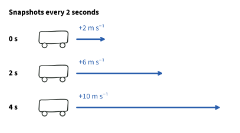
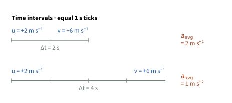
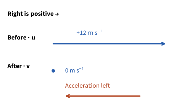
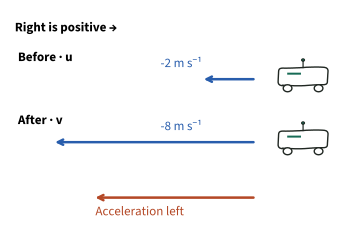
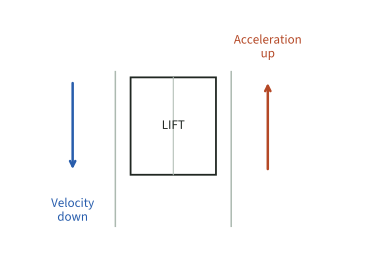
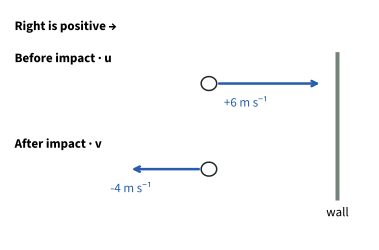
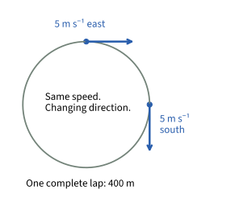
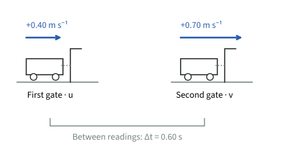
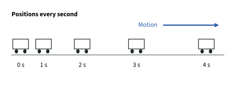

Acceleration and
changing motion
An object can speed up, slow down or turn. In each case, its velocity changes. Acceleration tells us how quickly that change happens. We’ll work out the change first, then make sense of its direction.
What acceleration measures
From Lesson 1: can velocity change even when speed stays the same?
Think of one example, then read the answer below.
Yes. A runner turning a corner changes direction, so the velocity changes. Keep that in mind: acceleration is about velocity, not just speed.

A trolley moves to the right. Its velocity is measured every 2 s.
- First interval: +2 to +6 m s−1.
- Second interval: +6 to +10 m s−1.
- Each interval adds 4 m s−1 in 2 s.
That is an average increase of 2 m s−1 each second. We write the acceleration as +2 m s−2.
Acceleration
rate of change of velocity
Acceleration is a vector. Velocity can change in magnitude, direction, or both.
Look at equal chunks of time. If the velocity changes by the same amount in the same direction in every chunk, the acceleration is constant. A few readings can fit that pattern, but they don’t tell us everything that happened between readings.
Calculating acceleration
First, work out how much the velocity changed. Then divide that change by the time it took. Keep the subtraction in this order: final velocity minus initial velocity.
Acceleration
What do the symbols mean?
ΔThe Greek letter delta. It means “change in”.
ΔvChange in velocity: final velocity minus initial velocity.
ΔtTime interval: final time minus initial time.
u, vInitial velocity and final velocity.
aavgAverage acceleration over the time interval.
“Rate” tells us how quickly something changes. The symbol Δ only means “change”. To find acceleration, we take the change in velocity and divide by the time it took.
Two velocity readings let us find the average acceleration between them. The acceleration could have varied along the way. If it stayed constant, our answer also describes it throughout that time.
SI units of velocity and acceleration
Velocity
Measured in m s−1.
Example: +6 m s−1 means 6 metres each second in the positive direction.
Acceleration
Measured in m s−2.
Example: +2 m s−2 means the velocity increases by 2 m s−1 each second, if acceleration is constant.
Example: the trolley’s first 2 seconds
u = +2 m s−1v = +6 m s−1over Δt = 2 s
- Write the two velocities: u = +2 m s−1, v = +6 m s−1.
- Subtract final minus initial: Δv = +6 − (+2) = +4 m s−1.
- Divide by 2 s:
The positive sign means the acceleration points to the right, our chosen positive direction.
If the same velocity change took twice as long, would the average acceleration be larger or smaller?
Smaller: half as large. The same change is spread over twice the time. Here it would be +1 m s−2.

Negative acceleration and slowing down
We need to agree on a positive direction first. In the next two examples, right is positive, so a minus sign means the acceleration points left. But is the object slowing down? First check which way it’s moving.
A vehicle slows to a stop
A vehicle travelling at +12 m s−1 brakes uniformly to rest in 6.0 s.

- At rest, the final velocity is 0.
- Change in velocity = 0 − (+12) = −12 m s−1.
The acceleration is 2.0 m s−2 to the left, while the vehicle is moving right. They point in opposite directions, so the vehicle slows down.
Check-in 1 · choose A or B
Does a minus sign always mean the object is slowing down?
A robot speeds up to the left
A robot is moving left. Its velocity changes from −2.0 to −8.0 m s−1 in 3.0 s, at a constant rate.

-
Find the velocity change.
−8.0 − (−2.0) = −6.0 m s−1
- Divide by 3.0 s.
Initial speed2.0 m s−1Final speed8.0 m s−1
Its speed increases, even though its acceleration is negative.
Use the sign to find the acceleration’s direction. Then compare it with the direction of motion. That tells you whether the object is speeding up or slowing down.
Comparing the directions
For straight-line motion, while the object is moving:
Same direction
Velocity and acceleration point the same way.
Speed increases.
Both may be positive, or both may be negative.
Opposite directions
Velocity and acceleration point opposite ways.
Speed decreases.
One is positive and the other is negative.
| Velocity | Acceleration | Speed |
|---|---|---|
| → Right (+) | → Right (+) | Increasing |
| → Right (+) | ← Left (−) | Decreasing |
| ← Left (−) | ← Left (−) | Increasing |
| ← Left (−) | → Right (+) | Decreasing |
Compare the two directions at the moment you’re describing. If the object stops and turns around, check the motion on each side of the stop separately. One average acceleration cannot tell us everything that happened between two readings.
A lift is moving downwards and slowing down. Which way is its acceleration?
Predict the direction, then compare with the diagram.

Upwards. The lift is still moving down, so an upward acceleration makes that downward motion slower. If we choose upwards as positive, the acceleration is positive too.
Worked example: a rebound
A ball reaches a wall at 6.0 m s−1 to the right and leaves at 4.0 m s−1 to the left. Contact lasts 0.050 s. Find the average acceleration during contact.

-
Choose right as positive.
u = +6.0 m s−1
v = −4.0 m s−1 -
Find the change: final minus initial.
Δv = −4.0 − (+6.0)
= −10.0 m s−1 - Divide by the contact time: 0.050 s.
-
State the direction.
The negative sign means left, because we chose right as positive.
Our answer is 200 m s−2 to the left. That’s a large acceleration, but look at how little time the change took: the ball changed velocity during a very brief contact with the wall.
Why can’t we use 6 − 4 = 2 for the velocity change?
Subtracting 6 − 4 only compares the speeds. It leaves out the change of direction. With right as positive, the velocity goes from +6 to zero, then to −4: a total change of −10 m s−1.
Remember that we found an average. The acceleration need not stay the same while the ball touches the wall. The ball slows down, turns around and then speeds up again. Its final speed is still smaller than its initial speed.
Acceleration without a change in speed
Picture the runner from Lesson 1. The speed stays at 5.0 m s−1, but watch which way the runner moves around the bend. That direction keeps changing.

Different arrow directions: different velocities.
Check-in 2 · choose A or B
Is the acceleration zero just because the speed is constant?
No. The runner keeps changing direction, so the velocity keeps changing too. That means there is acceleration, even though the speed stays the same.
For this lesson, you only need that explanation. Calculating acceleration around a circle comes later.
Complete the definition from memory: acceleration is the rate of change of ______.
Say the complete definition before reading the answer.
Velocity. Remember the sequence: velocity describes a change in displacement; acceleration describes a change in velocity.
Using measurements

A trolley moves right through two light gates. Take right as positive.
- First velocity: +0.40 m s−1.
- Second velocity: +0.70 m s−1.
- Time between the readings: 0.60 s.
We get an average acceleration of 0.50 m s−2 to the right. Can we say it stayed constant between the gates? No. These two readings don’t show what happened in between.
Would the time spent blocking just one gate be the right denominator here?
No. We’re comparing the velocity at one gate with the velocity at the other. So we need the time taken to travel between those readings, not the time spent blocking just one gate.
Practice and recall
Compare the gaps from 0–1 s and 3–4 s. What changed?

Write your answer before reading each solution. Use this method:
- Choose a positive direction. Write signed initial and final velocities.
- Calculate final minus initial. Keep brackets around negative numbers.
- Divide by the time for that change. State m s−2 and the acceleration direction.
A train changes uniformly from +5.0 to +17.0 m s−1 in 6.0 s. Find its acceleration.
-
Write the values.
u = +5.0, v = +17.0 m s−1; Δt = 6.0 s.
-
Subtract the starting velocity from the finishing velocity.
Δv = +17.0 − (+5.0) = +12.0 m s−1.
- Divide by the time this change took.
It accelerates in the positive direction and speeds up.
A robot moves left. Its velocity changes uniformly from −9.0 to −3.0 m s−1 in 2.0 s. Find its acceleration. Is it speeding up?
-
Write the values.
Take right as positive. u = −9.0, v = −3.0 m s−1; Δt = 2.0 s.
-
Subtract the starting velocity from the finishing velocity.
Δv = −3.0 − (−9.0) = +6.0 m s−1.
- Divide by the time this change took.
Acceleration points right. Speed falls from 9.0 to 3.0 m s−1, so it slows down.
A ball changes from −3.0 to +2.0 m s−1 in 0.10 s during a rebound. Find its average acceleration.
-
Write the values.
u = −3.0, v = +2.0 m s−1; Δt = 0.10 s.
-
Subtract the starting velocity from the finishing velocity.
Δv = +2.0 − (−3.0) = +5.0 m s−1.
- Divide by the time this change took.
In the positive direction. The change in velocity is +5.0 m s−1, not −1.0 m s−1.
Definitions and formula to remember
Acceleration
rate of change of velocity
Velocity · recall from Lesson 1
rate of change of displacement
Average acceleration
Use signed velocities, time in s, and acceleration in m s−2.
- Acceleration has both a magnitude and a direction, so it is a vector. Give its direction as well as its size.
- Negative acceleration means acceleration in the negative direction. It does not automatically mean slowing down.
- In straight-line motion, velocity and acceleration in the same direction increase speed; opposite directions decrease speed while the object is moving.
- Constant speed does not guarantee constant velocity: direction can change.
- Two endpoint readings give an average acceleration, not its full behaviour between readings.
- Always check: does the question ask for a velocity change, an acceleration, or an explanation of the motion?